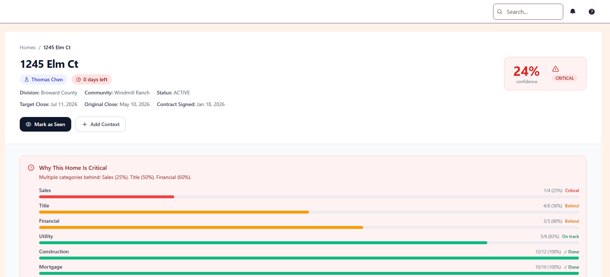
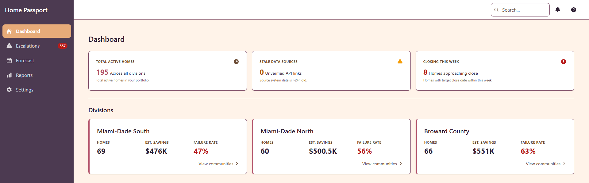
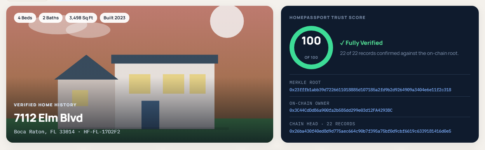
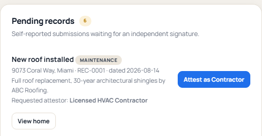
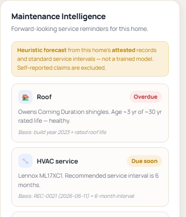

Predict what is happening. Create a persistent record of the home. Use that intelligence after closing.
Predict execution risk before it impacts the close.
Create a persistent digital identity for the home from builder data.
Use the home record to reduce avoidable service and warranty friction.
The wedge is Layer 1. The data created there gives Tessera the right to build Layers 2 and 3.
Builders have systems for individual functions. The risk emerges when those functions stop lining up.
A home can look healthy in one system while a dependency in another puts the close at risk.
Delayed revenue and operational disruption.
Longer time between construction completion and closing.
Teams discover the issue after the window to act has narrowed.
A real-time Closing Confidence Score for every home — predict the risk, explain the cause, drive the intervention.

Every prediction and its outcome becomes labeled training data. The engine sharpens with every close — and that data asset is what earns Tessera the right to build Layers 2 & 3.
Tessera sits above the existing builder stack and reasons across the signals that decide the outcome.
~$160K / month of preventable loss per division — against ~$671 / month to run it.
A division runs ~2,100 homes/yr (~175 closings/mo). Builders carry ~$2K/day per deal during a delay — so a handful of stuck closings is the whole difference between an on-time close and a month of carry.

A persistent digital identity for the home — from land deal through handoff and throughout the lifetime of the property.
Attached to the home — not the person — and persists as ownership changes.

Tessera doesn’t own the ledger — that’s what makes it trustworthy.

Life-of-home care after closing — fewer avoidable service and warranty calls.
● Delivered by email and push — no login, no app to check.
The Passport creates the context. Maintenance AI turns it into reminders, warranty guidance and service routing.

Tessera starts with an economic problem and builds toward a persistent intelligence layer around the home.
Our only real competitor is a spreadsheet.
We land inside the pipeline meeting they already hold.
Grouped by who legally owns the data.
Three companies, three owners of the data. The buyer picks the lender, so the mortgage system changes every deal — no builder ERP can cross that line.
None can reach the close.
Closest incumbent: ICE spans funding to recording — blind to construction.
The more of the home’s lifecycle Tessera can understand, the more useful the intelligence becomes — from execution risk before closing to service after closing.
Capital to turn the predictability engine into a scalable product and establish the foundation for the Home Passport.
We are raising pre-seed capital to validate Layer 1 at scale and build the infrastructure for the layers that follow.